|
|
|
Nipah
palm
Nypa fruticans
Family Arecaceae
updated
Jan 2013
Where
seen? This palm that seems to lack a trunk is sometimes
seen in our mangroves. In some places, they form huge stands, in others,
they occur in small clumps. In the past, it was found in tidal rivers
often forming large colonies. It is generally found in calm estuaries
and shallow lagoons with permanent and high inflows of freshwater.
It does not occur on shores exposed to waves or in areas with high
salinity, and is also not found far beyond the intertidal influence.
Features: Palm-shaped leaves very long (5-9m). The base of the frond is filled
with air so it can remain upright even when submerged. The 'stem'
of this palm is mostly horizontal and even underground. Thus called
the rhizome, this is very stout (up to 70cm in diameter), creeping
in mud, with diagonal leaf scars. The portion of the stem that is
vertical is very short. Shoots emerge along the stem, each bearing
the long leaves. Pure stands of these palms often appear because of
their growth habit from underground stems. The massive, dense underground
stem and root system can resist swift running water better than most
other mangrove species.
Flowers appear on a long stalk (1m), as an inflorescence. Female flowers
are encased in bracts and resemble a cone. Male flowers appear as
a long spike and when ripe is golden yellow with sticky pollen. Drosophila flies appear to be the agent of pollination. According to Tomlinson,
two kinds of insects visit the flowers "in significant numbers":
small bees of the genus Trigona and small flies of the Family
Drosophilidae. Bees may not be important pollinators as they only
visit the male flowers and not the female flowers. The small flies,
however, visit both kinds of flowers and appear to complete their
lifecycle in the branches of the male inflorescence.
Fruits are chestnut brown, in cluster forming a globular shape (20-25cm).
Each fruit bears one seed which starts to germinate while still on
the parent palm and just when the fruits drop off, the seedling is
already starting to pierce through the husk of the fruit. The fruits
are fibrous and air cavities in the seed coat and fruit coat help
keep the seedling afloat.
Human
uses: The Nipah palm is among the more commercially valuable
plants of the mangroves. The leaves are used as thatch for 'attap'
huts, the immature seed (endosperm) is harvested as a jellylike sweetmeat
called 'attap-chee' and is a favourite in local desserts. The sap
is extracted from the inflorescence and when fermented, is called
'toddy', a local alcoholic drink. The Common
palm civet (Paradoxurus hermaphroditus) is known to 'steal'
a drink of the sap. This civet is thus also known as the Toddycat.
According to Burkill, the leaves are used for roofing as is, or "a
more skilful use of the leaves" is to produce attap: drying the
leaves, folding them over a rod and stitching them in place to form
shingles called 'attap'. These shingles are used for roofing as well
as the sides of houses and can last for 5 years or more. The leaves
are also used to make umbrellas, sunhats, raincoats, baskets, mats
and bags. Young leaves are made into cigarette-wrappers.
Burkill describes the tapping process: A palm is fit to tap at 5 years
of age or after its second flowering. When the fruit is forming, the
stalk carrying it is beaten with a wooden mallet. After being bruised
daily for a week, the stalk is tapped for its sap and the flow maintained
by daily shaving off from the stump of the inflorescence. It is accepted
that tapping over 50 years is possible. The sap ferments into alcohol,
toddy, almost immediately as "bacteria of fermentation is in
abundance" in the containers used to collect the sap. Nipah suger
is not much made in Malaya because it contains "too much of a
treacly substance that is difficult to eliminate". Toddy left
to stand becomes vinegar in a fortnight, which is used to bleach Nipah
leaves for the hat and mat industry.
Status and threats: It is listed
as 'Vulnerable' in the Red List of threatened plants of Singapore.
According to Davison, most of the localities where this palm is found
is not in protected areas, so there is the danger of development wiping
out populations. Only populations at Sungei Buloh, Pulau Ubin and
Pulau Tekong are protected. |
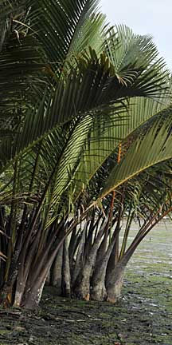
Pulau Ubin,
Jan 09
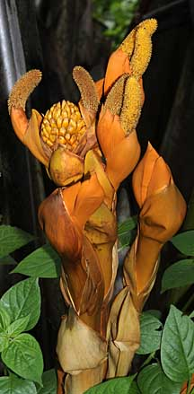
Ball-shaped
female flower with
long yellow spikes of male flowers.
Admiralty Park, Apr 09
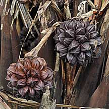
Growing
fruit.
Chek Jawa, Feb 09 |
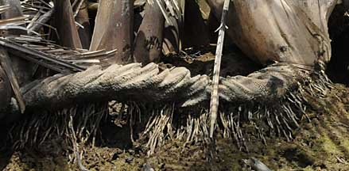
Underground stem.
Pulau Ubin, Jan 10 |
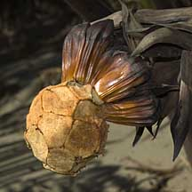
Fruits,
most have fallen off.
Chek Jawa, Apr 07 |
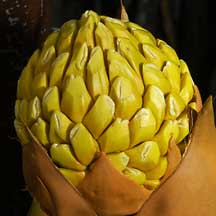
Female
flowering cone.
Chek Jawa, Jul 03 |
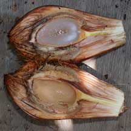
Attap chee.
Chek Jawa, Feb 02 |
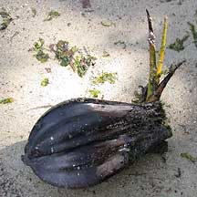
Growing
fruit.
Chek Jawa, Nov 02 |
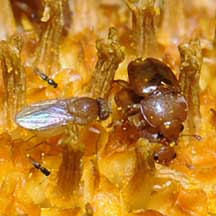
Male flowers
with pollinators.
Admiralty Park, Apr 09 |
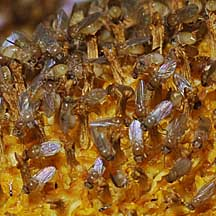
Male flowers with pollinators.
Admiralty
Park, Apr 09 |
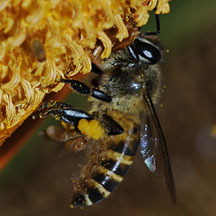
Male flowers with pollinators.
Admiralty
Park, Apr 09 |
| Nipah
palms on Singapore shores |
Links
References
- Teo, S.,
W. F. Ang, A. F. S. L. Lok, B. R. Kurukulasuriya & H. T. W. Tan,
2010. The
status and distribution of the nipah palm, Nypa fruticans Wurmb
(Arecaceae), in Singapore. Nature in Singapore, 3: 45-52.
- Hsuan Keng,
S.C. Chin and H. T. W. Tan.1998, The
Concise Flora of Singapore II: Monoctyledons Singapore University Press. 215 pp.
- Tomlinson,
P. B., 1986. The
Botany of Mangroves Cambridge University Press. USA. 419 pp.
- Burkill,
I. H., 1993. A
Dictionary of the Economic Products of the Malay Peninsula.
3rd printing. Publication Unit, Ministry of Agriculture, Malaysia,
Kuala Lumpur. Volume 1: 1-1240; volume 2: 1241-2444.
- Davison,
G.W. H. and P. K. L. Ng and Ho Hua Chew, 2008. The Singapore
Red Data Book: Threatened plants and animals of Singapore.
Nature Society (Singapore). 285 pp.
|
|
|
|